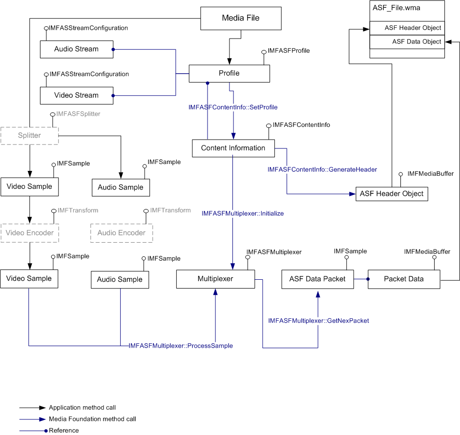

The ASF multiplexer is a WMContainer layer object that works with the ASF Data Object and gives an application the ability to generate data packets for an ASF container. The multiplexer accepts media data in the form of Media Samples and outputs media samples based on streaming and ASF packet parameters defined in the ASF Header Object. The output media samples hold references to one or more media buffers that contain packetized digital media data.You can use this object in a file encoding scenario where it receives encoded stream samples from the encoder or for ASF-ASF transcoding (remuxing).
The following diagram illustrates ASF data packet generation for an ASF file using the multiplexer.

For information about the structure of an ASF file, see ASF File Structure.
This section contains the following topics:
| Topic | Description |
|---|---|
| Creating the Multiplexer Object | How to create and initialize the multiplexer. |
| Generating New ASF Data Packets | How to generate data packets to constitute a new ASF Data Object. |
Â
Tutorial: Copying ASF Streams from One File to Another
Tutorial: Writing a WMA File by Using CBR Encoding
Â
Â